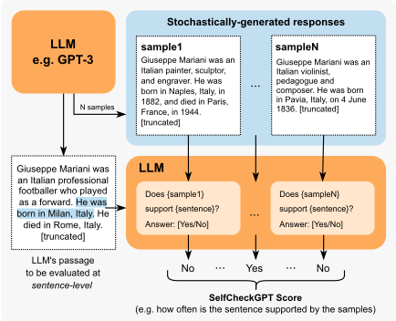
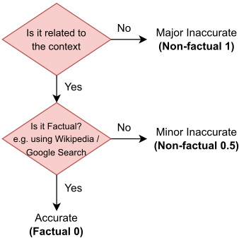
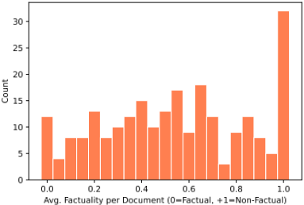
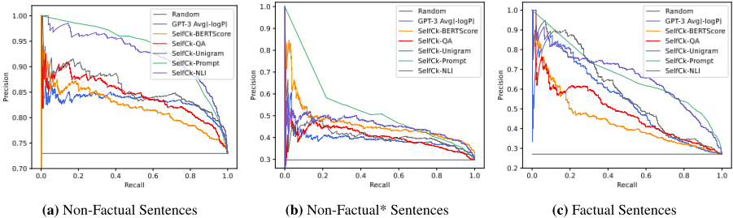
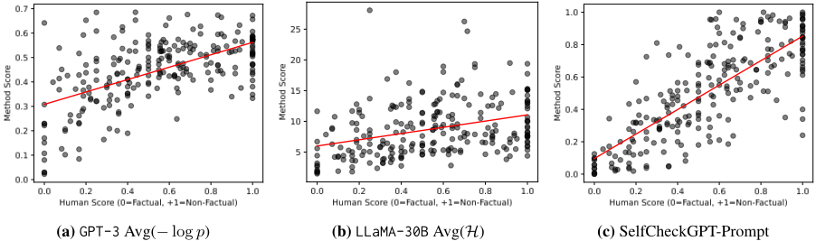
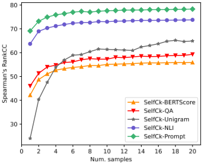
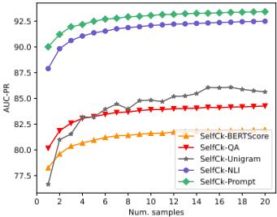
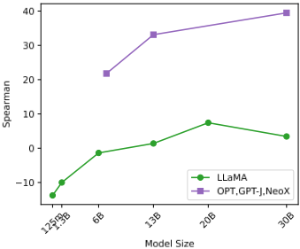
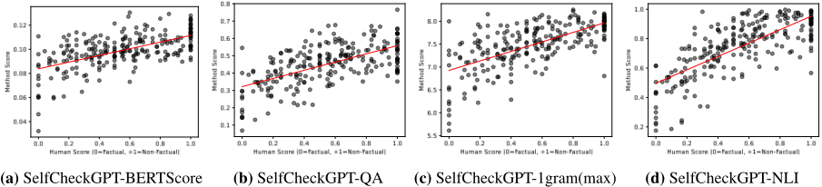

SelfCheckGPT：面向生成式大语言模型的零资源黑盒幻觉检测
LLM 会以高置信度生成虚假事实，而现有检测手段要么需要 token 级概率分布（ChatGPT 等黑盒 API 拿不到），要么依赖外部数据库的事实核查流水线。SelfCheckGPT 提出采样一致性思路：对同一 query 额外以温度 1.0 随机采样 N 个响应，若某句是模型已知事实，各样本应相互支持；若是幻觉，样本间会发散矛盾。论文据此实现 BERTScore、QA、n-gram、NLI、LLM Prompt 五种句子级幻觉打分变体，并构建了 GPT-3 生成的 WikiBio 标注数据集（238 篇、1908 句）。结果显示 SelfCheckGPT-Prompt 在句子级检测与篇章级排序上均显著优于灰盒概率/熵基线，篇章级 Pearson 相关达 78.32，NLI 变体是性能与算力的最佳折中。对团队而言，这是一套无需 logprobs、无需外部知识库即可落地的黑盒幻觉检测与 LLM 输出可靠性评测方案。
生成式 LLM 会自信地输出虚构事实（幻觉），削弱对产出的信任。已有检测方案存在两类障碍：基于 token 概率/熵的不确定性指标需要访问输出概率分布，对 ChatGPT 这类仅返回文本的黑盒 API 不可用；基于外部数据库的事实核查需要复杂的检索-验证流水线，只能校验库内知识且推理成本高。论文要解决：在不访问模型内部状态、不使用外部数据库的零资源条件下，检测黑盒 LLM 响应中的非事实句子，并对整篇响应的事实性进行排序。
核心是采样一致性：对同一 query，除主响应 R（温度 0.0、beam search）外，再以温度 1.0 随机采样 N 个响应（论文 N=20）；假设模型掌握的事实在各采样中表述一致、幻觉内容相互矛盾，据此为主响应每个句子计算与各样本的信息一致性分数 S(i)∈[0,1]。五种变体：BERTScore（RoBERTa-Large，取与各样本最相似句的平均分）；QA（MQAG 两阶段生成选择题，独立答题系统以其他样本为条件作答，用 Bayes 软计数处理不可答问题）；n-gram（用采样文本训练 n-gram 语言模型近似 token 概率）；NLI（DeBERTa-v3-large MNLI，仅取 entailment/contradiction logits 归一化为矛盾分）；LLM Prompt（固定模板让 LLM 判断句子是否被样本支持，Yes/No/N/A 映射为 0.0/1.0/0.5）。篇章级分数由句子级平均得到；同时构建并人工标注了 GPT-3 生成的 WikiBio 幻觉检测数据集并开源。
句子级检测中 GPT-3 自身 token 概率是强基线：事实句检测 AUC-PR 53.97（随机基线 27.04），幻觉检测 AUC-PR 由 72.96 提升至 83.21（Max(-log p)）
SelfCheckGPT-Prompt 显著优于灰盒方法（含 GPT-3 输出概率）及其他黑盒方法，篇章级事实性排序取得最高 Pearson 相关 78.32
BERTScore、QA、n-gram 等其他 SelfCheckGPT 变体在多数设置下也优于灰盒方法；计算成本最低的 unigram (max) 在不同设置下均表现良好
SelfCheckGPT-NLI 性能接近 Prompt 方法，被论文视为性能与计算量的最佳折中
Proxy LLM（LLaMA）近似灰盒指标效果明显更差；GPT-NeoX、OPT-30B 等代理模型性能接近随机基线
引入外部知识（WikiBio 参考段落）时 NLI/Prompt 变体性能显著受益；BERTScore/QA 用自采样即可达到与参考文本相当或更好的效果
性能随采样数 N 增加平滑提升且收益递减，n-gram 变体需要最多样本才达到平台
GPT-3 可自检自身文本（N=4 时仍优于 unigram），ChatGPT (gpt-3.5-turbo) 作为评估器略优于 GPT-3
数据集：238 篇 GPT-3 生成段落、1908 句标注，其中 39.9% major-inaccurate、33.1% minor-inaccurate、27.0% accurate；3 类/2 类标注 Cohen's κ 分别为 0.595/0.748
成本估算：对 1908 句×20 样本做 Yes/No 判断，GPT-3 约 $200、ChatGPT 约 $20
据论文自述，这是首个面向通用 LLM 响应的幻觉检测工作，也是首个可应用于黑盒系统的零资源幻觉检测方案：不同于需要 token 概率的灰盒不确定性度量和依赖外部数据库的事实核查流水线，SelfCheckGPT 仅凭随机采样响应间的一致性即可工作，并提供从最便宜（unigram）到最重（LLM Prompt）的五种变体按算力与接口条件取舍；同时发布了带句子级事实性标注的 GPT-3 WikiBio 数据集，填补了当时无标准幻觉检测数据集的空白。
相关度级别：high
命中能力域：3.5 评测与可靠使用
理由：直接命中 3.5 评测与可靠使用域的核心技术：论文贡献正是一套 LLM 应用可靠性保障方法——对黑盒模型输出做句子级幻觉检测与篇章级事实性排序，并配套发布标注数据集与评测协议（句子级 AUC-PR、篇章级 Pearson/Spearman 相关），属于典型的 LLM 应用评测与可靠性工程实证。团队用 LLM/Agent 做知识库问答、文档与研发自动化，产出事实性与可靠性是核心关注点；SelfCheckGPT 无需 logprobs、无需外部知识库，可直接嵌入现有 API 调用链路作为质量门禁或评测指标，unigram/NLI/Prompt 变体支持按成本分级部署，其采样一致性思想也可迁移为团队内部评测 harness 的幻觉指标。与 3.1-3.4 无实质关联：不涉及上下文组织、提示优化体系、Agent 架构或多智能体协作。
建议动作：深入精读并做内部分享
arXiv:2303.08896v3 [cs.CL] 2023年10月11日
Potsawee Manakul, Adian Liusie, Mark J. F. Gales
剑桥大学工程系 ALTA 研究所 pm574@cam.ac.uk, al826@cam.ac.uk, mjfg@eng.cam.ac.uk
诸如 GPT-3 之类的生成式大语言模型（Large Language Models, LLM）能够针对各种各样的用户提示生成高度流畅的回复。然而，众所周知，LLM 会对事实产生幻觉并做出非事实性的陈述，这会削弱人们对其输出的信任。现有的事实核查方法要么需要访问输出概率分布（对于 ChatGPT 这类系统而言可能无法获得），要么需要借助通过独立且往往复杂的模块进行接口连接的外部数据库。在本工作中，我们提出了"SelfCheckGPT"，这是一种简单的基于采样的方法，可用于以零资源的方式（即无需外部数据库）对黑盒模型的回复进行事实核查。SelfCheckGPT 利用了一个简单的思想：如果 LLM 掌握某一给定概念的知识，那么采样得到的回复很可能彼此相似并包含一致的事实。然而，对于幻觉产生的事实，随机采样得到的回复则很可能出现分歧并相互矛盾。我们通过使用 GPT-3 生成关于 WikiBio 数据集中人物的段落来研究这一方法，并人工标注所生成段落的事实性。我们证明 SelfCheckGPT 能够：i) 检测非事实性句子和事实性句子；以及 ii) 按事实性对段落进行排序。我们将本方法与若干基线方法进行比较，结果表明，与灰盒方法相比，本方法在句子级幻觉检测中获得了明显更高的 AUC-PR 分数，并在段落级事实性评估中获得了更高的相关性分数。1
诸如 GPT-3（Brown et al., 2020）和 PaLM（Chowdhery et al., 2022）等大语言模型（LLMs）能够针对各种用户提示生成流畅且逼真的回复。它们已被用于许多应用中，例如自动起草报告的工具、虚拟助手和摘要系统。尽管 LLM 生成的文本具有令人信服且逼真的特性，但人们对 LLM 日益增长的担忧在于其产生事实性幻觉的倾向。人们广泛观察到，模型能够自信地生成虚构信息，而令人担忧的是，能够适当识别 LLM 幻觉的现有方法即便存在也寥寥无几。
1 代码和数据集可在项目页面 https://github.com/potsawee/selfcheckgpt 获取。

一种可能的幻觉检测方法是利用现有的内在不确定性度量来确定输出序列中系统最不确定的部分（Yuan et al., 2021; Fu et al., 2023）。然而，诸如词元（token）概率或熵等不确定性度量需要访问词元级概率分布，而用户可能无法获得这类信息，例如当系统通过受限的外部 API 访问时。另一种方法是利用事实核查（fact-verification）方法，即从外部数据库中检索证据以评估某一论断的真实性（Thorne et al., 2018; Guo et al., 2022）。然而，事实只能相对于数据库中已有的知识进行评估。此外，在远超纯事实核查的广泛任务中都观察到了幻觉现象（Kryscinski et al., 2020; Maynez et al., 2020）。
本文提出 SelfCheckGPT，这是一种基于采样的方法，能够检测大语言模型（LLM）生成的响应是幻觉性的还是事实性的。据我们所知，SelfCheckGPT 是首个针对一般 LLM 响应分析模型幻觉的工作，也是首个可应用于黑盒系统的零资源幻觉检测方案。SelfCheckGPT 的动机思想是：当 LLM 已在某一给定概念上接受过训练时，采样得到的响应很可能彼此相似并包含一致的事实。然而，对于幻觉性的事实，随机采样得到的响应很可能出现分歧，并可能相互矛盾。通过从 LLM 采样多个响应，可以度量不同响应之间的信息一致性，从而判断陈述是事实性的还是幻觉性的。由于 SelfCheckGPT 仅利用采样得到的响应，它还具有额外优势：可用于黑盒模型，且无需外部数据库。我们考虑了用于度量信息一致性的五种 SelfCheckGPT 变体：BERTScore、question-answering、n-gram、NLI 和 LLM prompting。通过对 GPT-3 生成的已标注文章进行分析，我们表明 SelfCheckGPT 是一种非常有效的幻觉检测方法，甚至能够超越灰盒方法，并为 LLM 这一日益重要的问题提供了一个强有力的首个基线。
幻觉已在文本生成任务中得到研究，包括摘要生成（Huang et al., 2021）与对话生成（Shuster et al., 2021），以及多种其他自然语言生成任务（Ji et al., 2023）。自洽性解码（self-consistency decoding）已被证明能够提升思维链（chain-of-thought, CoT）提示在复杂推理任务上的性能（Wang et al., 2023）。此外，Liu et al. (2022) 提出了一个幻觉检测数据集，但其中的文本是通过对事实性文本进行扰动获得的，因此可能无法反映真实的 LLM 幻觉。
最近，Azaria and Mitchell (2023) 训练了一个多层感知机分类器，将 LLM 的隐藏表示作为输入来预测句子的真实性。然而，该方法是一种白盒方法，它使用 LLM 的内部状态，而这些状态可能无法通过 API 调用获得，并且该方法还需要有标注的数据来进行监督训练。另一种近期的方法是自我评估（self-evaluation）(Kadavath et al., 2022)，即通过提示让 LLM 评估其先前的预测，例如预测其生成的回答/答案为真的概率。
Token 概率已被用作模型确定性的一种指示。例如，OpenAI 的 GPT-3 网页界面允许用户显示 token 概率（如图 2 所示），并且针对自回归生成，已有研究提出了基于偶然不确定性和认知不确定性的进一步不确定性估计方法（Xiao and Wang, 2021; Malinin and Gales, 2021）。此外，条件语言模型分数也被用于评估文本的各种属性（Yuan et al., 2021; Fu et al., 2023）。最近，有研究提出了语义不确定性（semantic uncertainty）来处理自由形式生成任务中的不确定性，在该方法中概率被附加到概念而非 token 上（Kuhn et al., 2023）。
现有的事实核查（fact verification）方法遵循由声明检测、证据检索和判定预测组成的多阶段流水线（Guo et al., 2022; Zhong et al., 2020）。然而，此类方法需要访问外部数据库，且可能带来相当可观的推理成本。
本节将介绍在零资源（zero-resource）设置下、当能够完全访问输出分布时，可用于判定大语言模型（LLM）响应事实性的方法。2 我们将使用“事实的”（factual）来定义陈述何时建立在有效信息之上，即何时避免了幻觉；并使用“零资源”（zero-resource）来指代不使用外部数据库的情形。
为了理解如何在零资源设置下判定生成响应的事实性，我们考虑 LLM 的预训练。在预训练期间，模型在海量文本语料上以下一词预测（next-word prediction）的方式进行训练。这使模型获得了对语言的深刻理解（Jawahar et al., 2019; Raffel et al., 2020）、强大的上下文推理能力（Zhang et al., 2020）以及世界知识（Liusie et al., 2023）。考虑输入"Lionel Messi is a _"。由于梅西（Messi）是一位世界著名的运动员，可能在预训练中出现过多次，LLM 很可能知道梅西是谁。因此，在给定上下文的情况下，词元（token）"footballer"可能被赋予较高的概率，而"carpenter"等其他职业则可能被认为不太可能。然而，对于另一个输入，如"John Smith is a _"，系统将无法确定后续的续写内容，这可能导致出现平坦的概率分布。在推理过程中，这很可能导致生成非事实性的词语。
这一洞见使我们能够理解不确定性度量与事实性之间的联系。事实性的句子很可能包含似然更高、熵更低的词元，而幻觉则很可能来自概率分布平坦、不确定性较高的位置。
给定大语言模型（LLM）的响应 R，令 i 表示 R 中的第 i 个句子，j 表示第 i 个句子中的第 j 个词元，J 为该句子中的词元数量，p ij 表示 LLM 在第 i 个句子的第 j 个词元处所生成词语的概率。本文使用了两种概率度量：
Max ( - log p ) 通过评估句子中最不可能出现的词元来衡量该句子的似然。
2 诸如 Azaria 和 Mitchell（2023）方法之类的替代性白盒方法需要访问完整的内部状态，实用性较低，因此本工作未予考虑。
输出分布的熵为：
其中 p ij ( ˜ w ) 表示词语 ˜ w 在第 i 个句子的第 j 个词元处被生成的概率，W 为词表中所有可能词语的集合。与基于概率的度量类似，本文使用了两种基于熵的度量：
灰盒方法的一个缺点是它们需要输出的词元级概率。尽管这看似是一个合理的要求，但对于只能通过有限的 API 调用访问的超大规模 LLM 而言，此类词元级信息可能无法获取（例如 ChatGPT）。因此，我们考虑黑盒方法，这类方法即使在仅有基于文本的响应可用时也依然适用。
近似灰盒方法的一种简单途径是使用代理 LLM（proxy LLM），即另一个我们可以完全访问的 LLM，例如 LLaMA（Touvron et al., 2023）。代理 LLM 可用于近似生成该文本的黑盒 LLM 的输出词元级概率。在下一节中，我们提出 SelfCheckGPT，它同样是一种黑盒方法。
SelfCheckGPT 是我们提出的黑盒零资源幻觉检测方案，其工作原理是比较多个采样得到的响应并度量一致性。
记号：设 R 表示由给定用户查询得到的 LLM 响应。SelfCheckGPT 使用相同的查询再抽取 N 个随机的 LLM 响应样本 { S 1 , S 2 , ..., S n , ..., S N }，然后度量该响应与这些随机样本之间的一致性。我们将 SelfCheckGPT 设计为预测第 i 个句子的幻觉分数 S ( i )，使得 S ( i ) ∈ [0 . 0 , 1 . 0]，其中当第 i 个句子以有效信息为依据时 S ( i ) → 0 . 0，而当第 i 个句子为幻觉时 S ( i ) → 1 . 0。3 以下小节将逐一介绍 SelfCheckGPT 的各个变体。
3
设 B ( ., . ) 表示两个句子之间的 BERTScore。基于 BERTScore 的 SelfCheckGPT 计算第 i 个句子与每个抽取样本中最相似句子之间的 BERTScore 的平均值：
其中 r i 表示 R 中的第 i 个句子，s n k 表示第 n 个样本 S n 中的第 k 个句子。这样一来，如果某个句子中的信息出现在许多抽取的样本中，则可以认为该信息是符合事实的；反之，如果该陈述没有出现在任何其他样本中，则它很可能是幻觉。在本工作中，RoBERTa-Large（Liu et al., 2019）被用作 BERTScore 的骨干网络。
我们还考虑使用自动多选题问答生成（MQAG）框架（Manakul et al., 2023）来为 SelfCheckGPT 度量一致性。MQAG 通过针对主要生成回答生成多选题来评估一致性，独立的答题系统可以在以其他抽取的样本回答为条件的情况下尝试回答这些问题。如果查询的是关于一致信息的问题，答题系统预期会预测出相似的答案。MQAG 由两个阶段组成：问题生成 G 和问题回答 A。对于回答 R 中的句子 r i，我们抽取问题 q 和选项 o：
回答阶段 A 选择答案：
对于 { S 1 , ..., S N } 中的每个样本，我们比较 a R 是否等于 a S n，从而得到匹配数 #matches N m 和不匹配数 #not-matches N n。基于匹配/不匹配计数，为第 i 个句子和问题 q 定义一个简单的不一致性分数：S QA ( i, q ) =
3 例外是采用 n -gram 的 SelfCheckGPT，因为 n -gram 语言模型的分数是无界的。
N n N m + N n 。为了考虑所生成问题的可回答性，我们在附录 B 中表明，可以通过应用软计数（soft-counting）来修改不一致性分数，从而得到：
其中 N ′ m 为有效匹配计数，N ′ n 为有效不匹配计数，γ 1 和 γ 2 在附录 B.1 中定义。最终，SelfCheckGPT with QA 是所有 q 上不一致性分数的平均值，
给定由大语言模型（LLM）生成的样本 { S 1 , ..., S N }，可以利用这些样本构建一个新的语言模型来近似该 LLM。当 N 足够大时，在极限情况下，新语言模型将收敛到生成这些回答的 LLM。因此，我们可以使用新语言模型来近似该 LLM 的 token 概率。
在实践中，由于时间和/或成本的限制，样本数量 N 只能是有限的。因此，我们使用样本 { S 1 , ..., S N } 以及被评估的主回答 R 来训练一个简单的 n-gram 模型；需要指出的是，将 R 包含在内可以视为一种平滑方法，即把 R 中每个 token 的计数加 1。随后，我们计算回答 R 中句子的对数概率的平均值，
其中 ˜ p ij 是（第 i 个句子的第 j 个 token 的）使用 n-gram 模型计算得到的概率。与灰盒方法类似，我们也可以使用负对数概率的最大值，
自然语言推理（Natural Language Inference, NLI）用于判断一个假设（hypothesis）是否可以由前提（premise）推导得出，其结果被分为蕴含（entailment）/中性（neutral）/矛盾（contradiction）三类。NLI 度量已被用于衡量摘要任务中的忠实度，例如 Maynez et al. (2020) 使用在 MNLI (Williams et al., 2018) 上训练的文本蕴含分类器来判断摘要是否与上下文相矛盾。受基于 NLI 的摘要评估方法的启发，我们考虑将 NLI 矛盾分数用作 SelfCheckGPT 分数。
对于 SelfCheck-NLI，我们使用在 MNLI 上微调的 DeBERTa-v3-large (He et al., 2023) 作为 NLI 模型。NLI 分类器的输入通常是将前提与假设拼接而成，而在我们的方法中，则是将采样得到的段落 S n 与待评估的句子 r i 拼接在一起。仅考虑与 'entailment' 和 'contradiction' 类别相关联的 logits，
其中 z e 和 z c 分别是 'entailment' 和 'contradiction' 类别的 logits。这种归一化忽略了中性类别，并确保概率被限定在 0.0 到 1.0 之间。随后，每个样本 S n 的 SelfCheckGPT with NLI 分数定义为，
最近的研究表明，大语言模型（LLM）在零样本（zero-shot）设置下能够有效评估文档与其摘要之间的信息一致性（Luo et al., 2023）。因此，我们使用以下提示（prompt）查询一个 LLM，以评估第 i 个句子是否得到样本 S n（作为上下文）的支持。
------------------------------------------------
Context: {} Sentence: {} Is the sentence supported by the context above? Answer Yes or No: ------------------------------------------------
初步研究表明，GPT-3（text-davinci-003）在 98% 的情况下会输出 Yes 或 No，而其余任何输出均可被设为 N/A。在将第 i 个句子与样本 S n 进行比较时，通过提示得到的输出经由映射 { Yes : 0.0, No : 1.0, N/A : 0.5} 被转换为分数 x n i。最终的不一致性分数随后计算如下：
SelfCheckGPT-Prompt 如图 1 所示。值得注意的是，我们的初步研究发现，诸如 GPT-3（text-curie-001）或 LLaMA 等能力较弱的模型无法通过此类提示有效地执行一致性评估。
由于目前尚无标准的幻觉检测数据集可用，我们通过以下方式评估我们的幻觉检测方法：1) 使用 GPT-3 针对 WikiBio 数据集（Lebret et al., 2016）中的个体/概念生成合成的维基百科文章；2) 在句子层面人工标注段落的事实性；3) 评估系统检测幻觉的能力。
WikiBio 是一个数据集，其中每个输入包含特定概念的维基百科文章的第一段（以及表格信息）。我们按段落长度对 WikiBio 测试集进行排序，并从最长的前 20% 文章中随机抽取 238 篇文章（以确保不会选中非常生僻的概念）。随后使用 GPT-3（text-davinci-003）针对某个概念生成维基百科文章，所使用的提示为 " This is a Wikipedia passage about {concept} :"。表 1 给出了 GPT-3 生成段落的统计信息。
| 0 | 1 | 2 |
|---|---|---|
| #Passages | #Sentences | #Tokens/passage |
| 238 | 1908 | 184.7 ± 36.9 |
| 0 | 1 | 2 |
随后，我们按照图 3 所示的标注指南对生成段落的句子进行标注，将每个句子分类为以下类别之一：
在 1908 个已标注的句子中，761 个（39.9%）句子被标注为严重不准确（major-inaccurate），631 个（33.1%）为轻微不准确（minor-inaccurate），516 个（27.0%）为准确（accurate）。数据集中有 201 个句子由两位不同的标注者进行了标注。为了给该子集获得单一标签，如果两位标注者意见一致，则采用一致的标签；然而，如果存在分歧，则选择最坏情况的标签（例如，{minor inaccurate, major inaccurate} 被映射为 major inaccurate）。以 Cohen's κ（Cohen, 1960）衡量的标注者间一致性所对应的 κ

值为 0.595 和 0.748，分别表明在 3 类和 2 类场景下具有中等和较强的一致性（Viera et al., 2005）。4
此外，通过对每个段落中的句子级标签取平均值，可以得到段落级分数。段落级分数的分布如图 4 所示，其中我们观察到在 +1.0 处存在一个很大的峰值。我们将该峰值处的点称为完全幻觉（total hallucination），它发生在响应的信息与真实概念无关且完全由 LLM 捏造的情况下。

用于为我们数据集生成段落的生成式 LLM 是 GPT-3（text-davinci-003），它是创建和标注数据集时最先进的系统。为获得主要响应，我们将 temperature 设为 0.0，并使用标准的 beam search 解码。对于随机生成的样本，我们将 temperature 设为 1.0，并生成 N =20 个样本。对于代理 LLM 方法，我们使用 LLaMA（Touvron et al., 2023），它是目前可用的性能最佳的开源 LLM 之一。对于 SelfCheckGPT-Prompt，我们同时考虑了 GPT-3（即用于生成段落的同一 LLM）以及新发布的 ChatGPT（gpt-3.5-turbo）。有关 SelfCheckGPT 中各系统的更多细节以及使用其他代理 LLM 的结果可在附录中找到。
4 3-class 指在 accurate（准确）、minor inaccurate（轻微不准确）、major inaccurate（严重不准确）之间进行选择的情况。2-class 指将 minor/major inaccuracies（轻微/严重不准确）合并为一个标签的情况。
首先，我们研究我们的幻觉检测方法能否识别句子的事实性。在检测非事实性句子时，major-inaccurate（严重不准确）标签与 minor-inaccurate（轻微不准确）标签被合并归入非事实性类别，而 factual（事实性）类别则指 accurate（准确）的句子。此外，我们还考虑了一项更具挑战性的任务，即在并非完全幻觉的段落中检测 major-inaccurate（严重不准确）句子，我们将其称为 non-factual ∗ 。5 图 5 和表 2 展示了我们方法的性能，可以得出以下观察结果：
1) LLM 的概率 p 与事实性高度相关。我们的结果表明，概率度量（来自生成文本的 LLM）是评估事实性的强基线。事实性句子可以以 53.97 的 AUC-PR 被识别出来，显著优于 27.04 的随机基线，同时幻觉检测的 AUC-PR 也从 72.96 提升至 83.21。这支持了如下假设：当 LLM 对所生成的信息不确定时，生成的 token 往往具有较高的不确定性，为幻觉检测方法开辟了一条有前景的方向。此外，概率 p 度量的表现优于 top-5 token 的熵 H 度量。
2) 代理 LLM 的表现明显差于 LLM(GPT-3)。基于 LLaMA 的代理 LLM 的结果表明，熵 H 度量优于概率度量。这表明，使用更丰富的不确定性信息可以提升事实性/幻觉检测性能，而此前 top-5 token 的熵很可能是不够的。此外，当使用其他代理 LLM（如 GPT-NeoX 或 OPT-30B）时，性能接近随机基线。我们认为，这种较差的性能源于不同 LLM 具有不同的生成模式，因此即使对于常见 token，在响应与代理 LLM 的生成风格不相似的情况下，其概率也可能很低。我们注意到，未来的研究可以引入加权条件语言模型（LM）分数，例如 BARTScore（Yuan et al., 2021）。
5 共有 206 个 non-factual ∗ 段落（1632 个句子）。

| Method.Method | Sentence-level (AUC-PR).NonFact | Sentence-level (AUC-PR).NonFact* | Sentence-level (AUC-PR).Factual | Passage-level (Corr.).Pearson | Passage-level (Corr.).Spearman |
|---|---|---|---|---|---|
| Random | 72.96 | 29.72 | 27.04 | - | - |
| GPT-3 (text-davinci-003) 's probabilities ( LLM, grey-box ) | GPT-3 (text-davinci-003) 's probabilities ( LLM, grey-box ) | GPT-3 (text-davinci-003) 's probabilities ( LLM, grey-box ) | GPT-3 (text-davinci-003) 's probabilities ( LLM, grey-box ) | GPT-3 (text-davinci-003) 's probabilities ( LLM, grey-box ) | GPT-3 (text-davinci-003) 's probabilities ( LLM, grey-box ) |
| Avg( - log p ) | 83.21 | 38.89 | 53.97 | 57.04 | 53.93 |
| Avg( H ) † | 80.73 | 37.09 | 52.07 | 55.52 | 50.87 |
| Max( - log p ) | 87.51 | 35.88 | 50.46 | 57.83 | 55.69 |
| Max( H ) † | 85.75 | 32.43 | 50.27 | 52.48 | 49.55 |
| LLaMA-30B 's probabilities ( Proxy LLM, black-box ) | LLaMA-30B 's probabilities ( Proxy LLM, black-box ) | LLaMA-30B 's probabilities ( Proxy LLM, black-box ) | LLaMA-30B 's probabilities ( Proxy LLM, black-box ) | LLaMA-30B 's probabilities ( Proxy LLM, black-box ) | LLaMA-30B 's probabilities ( Proxy LLM, black-box ) |
| Avg( - log p ) | 75.43 | 30.32 | 41.29 | 21.72 | 20.20 |
| Avg( H ) | 80.80 | 39.01 | 42.97 | 33.80 | 39.49 |
| Max( - log p ) | 74.01 | 27.14 | 31.08 | -22.83 | -22.71 |
| Max( H ) | 80.92 | 37.32 | 37.90 | 35.57 | 38.94 |
| SelfCheckGPT ( black-box) | SelfCheckGPT ( black-box) | SelfCheckGPT ( black-box) | SelfCheckGPT ( black-box) | SelfCheckGPT ( black-box) | SelfCheckGPT ( black-box) |
| w/ BERTScore | 81.96 | 45.96 | 44.23 | 58.18 | 55.90 |
| w/ QA | 84.26 | 40.06 | 48.14 | 61.07 | 59.29 |
| w/ Unigram (max) | 85.63 | 41.04 | 58.47 | 64.71 | 64.91 |
| w/ NLI | 92.50 | 45.17 | 66.08 | 74.14 | 73.78 |
| w/ Prompt | 93.42 | 53.19 | 67.09 | 78.32 | 78.30 |
| Method.Method | Sentence-level (AUC-PR).NonFact | Sentence-level (AUC-PR).NonFact* | Sentence-level (AUC-PR).Factual | Passage-level (Corr.).Pearson | Passage-level (Corr.).Spearman |
3) SelfCheckGPT 优于灰盒方法。可以看出，SelfCheckGPTPrompt 显著优于灰盒方法（包括 GPT-3 的输出概率）以及其他黑盒方法。即使是 SelfCheckGPT 的其他变体，包括 BERTScore、QA 和 n-gram，在大多数设置下也优于灰盒方法。有趣的是，尽管是计算开销最小的方法，采用 unigram（max）的 SelfCheckGPT 在不同设置下都表现良好。本质上，在评估一个句子时，该方法会在所有样本中挑选出现次数最低的 token。这表明，如果某个 token 在生成的样本（N =20）中仅出现少数几次（或仅一次），那么它很可能是非事实性的。
4) 使用 n-gram 的 SelfCheckGPT。在考察从 1-gram 到 5-gram 的 n-gram 性能时，结果表明，仅找出可能性最低的 token/n-gram 比计算句子的平均 n-gram 分数更为有效，详见附录中的表 7。此外，随着 n 的增大，使用 n-gram (max) 的 SelfCheckGPT 的性能会下降。
7

方法优于所有黑盒和灰盒基线方法，其性能接近 Prompt 方法的性能。由于使用 Prompt 的 SelfCheckGPT 计算开销可能很大，使用 NLI 的 SelfCheckGPT 可能是最实用的方法，因为它在性能与计算量之间提供了良好的折中。
前述结果表明，SelfCheckGPT 是预测句子级事实性的有效方法。另一个需要考虑的问题是，SelfCheckGPT 是否也可用于确定段落的整体事实性。段落级事实性分数通过将句子级分数在所有句子上取平均来计算。
其中 S ( i ) 为句子级分数，| R | 为段落中的句子数量。由于人类判断具有一定的主观性，对句子级标签取平均可以得到噪声更小的真值。需要注意的是，对于 Avg( - log p ) 和 Avg( H )，我们计算的是段落中所有 token 的平均值；而对于 Max( - log p ) 和 Max( H )，我们首先在句子级别对 token 取最大值操作，然后按照公式 12 对所有句子取平均。
我们在表 2 和图 6 中的结果表明，所有 SelfCheckGPT 方法与人类判断的相关性都远高于其他基线方法，包括灰盒概率和熵方法。SelfCheckGPT-Prompt 是表现最好的方法，达到了最高的 Pearson 相关系数 78.32。不出所料，代理大语言模型（LLM）方法再次取得了明显更低的相关性。
如果外部知识可用，则可以衡量 LLM 响应与信息源之间的信息一致性。在本实验中，我们使用 WikiBio 中每个概念可用的第一段。6
| Method.Method | Sent-lvl AUC-PR.NoFac | Sent-lvl AUC-PR.NoFac* | Sent-lvl AUC-PR.Fact | Passage-lvl.Pear. | Passage-lvl.Spear. |
|---|---|---|---|---|---|
| SelfCk-BERT | 81.96 | 45.96 | 44.23 | 58.18 | 55.9 |
| WikiBio+BERT | 81.32 | 40.62 | 49.15 | 58.71 | 55.8 |
| SelfCk-QA | 84.26 | 40.06 | 48.14 | 61.07 | 59.29 |
| WikiBio+QA | 84.18 | 45.4 | 52.03 | 57.26 | 53.62 |
| SelfCk-1gm | 85.63 | 41.04 | 58.47 | 64.71 | 64.91 |
| WikiBio+1gm | 80.43 | 31.47 | 40.53 | 28.67 | 26.7 |
| SelfCk-NLI | 92.5 | 45.17 | 66.08 | 74.14 | 73.78 |
| WikiBio+NLI | 91.18 | 48.14 | 71.61 | 78.84 | 80 |
| SelfCk-Prompt | 93.42 | 53.19 | 67.09 | 78.32 | 78.3 |
| WikiBio+Prompt | 93.59 | 65.26 | 73.11 | 85.9 | 86.11 |
| Method.Method | Sent-lvl AUC-PR.NoFac | Sent-lvl AUC-PR.NoFac* | Sent-lvl AUC-PR.Fact | Passage-lvl.Pear. | Passage-lvl.Spear. |
我们在表 3 中的发现如下。首先，使用自采样样本的 BERTScore/QA 版 SelfCheckGPT 能够取得与使用参考段落时相当甚至更好的性能。其次，使用 n-gram 的 SelfCheckGPT 在用 WikiBio 段落替代自采样样本时性能大幅下降。这一失败归因于如下事实：仅凭 WikiBio 参考文本不足以训练 n-gram 模型。第三，相比之下，当能够获取检索到的信息时，使用 NLI/Prompt 的 SelfCheckGPT 可以显著受益。尽管如此，在实践中，为 LLM 生成的每一种可能用例都配备一个外部数据库是不可行的。
6 该方法不再是零资源的，因为它需要从外部数据中检索相关知识。
尽管基于采样的方法在抽取更多样本时预期会有更好的表现，但这会带来更高的计算成本。因此，我们研究了性能随样本数量变化的情况。我们在图 7 中的结果表明，随着使用更多样本，SelfCheckGPT 的性能平稳提升，但随着生成样本数量的增多，收益逐渐递减。基于 n-gram 的 SelfCheckGPT 需要最多的样本数量，其性能才能达到平台期。

我们研究了生成文本的大语言模型（LLM）能否对其自身生成的文本进行自检。我们使用缩减后的样本集（N = 4）进行了这一消融实验。
| Text-Gen | SelfCk-Prompt | N | Pear. | Spear. |
|---|---|---|---|---|
| GPT-3 | ChatGPT | 20 | 78.32 | 78.3 |
| GPT-3 | ChatGPT | 4 | 76.47 | 76.41 |
| GPT-3 | GPT-3 | 4 | 73.11 | 74.69 |
| † SelfCheck w/ unigram (max) | † SelfCheck w/ unigram (max) | 20 | 64.71 | 64.91 |
| † SelfCheck w/ NLI | † SelfCheck w/ NLI | 20 | 74.14 | 73.78 |
| Text-Gen | SelfCk-Prompt | N | Pear. | Spear. |
表 4 的结果表明，GPT-3 能够对其自身生成的文本进行自检，即使仅使用 4 个样本，其表现也优于 unigram 方法。然而，ChatGPT 在评估句子是否得到上下文支持方面相比 GPT-3 略有提升。更多细节见附录 C。
本文是首个针对通用大语言模型（LLM）响应的幻觉检测任务开展研究的 工作。我们提出了 SelfCheckGPT，这是一种零资源方法，适用于任何黑盒 LLM，无需外部资源，并展示了我们方法的有效性。SelfCheckGPT 在句子和段落两个层级上均优于所考虑的一系列灰盒和黑盒基线检测方法，此外我们还发布了一个用于 GPT-3 幻觉检测的带标注数据集，其中包含句子级事实性标签。
在本研究中，238 篇 GPT-3 生成文本主要是 WikiBio 数据集中关于人物的段落。为了进一步研究 LLM 幻觉的本质，本研究可以扩展到更广泛的概念范围，例如同时考虑关于地点和物体的生成文本。此外，本工作在句子层面考虑事实性，但我们注意到，单个句子可能同时包含事实性与非事实性信息。例如，Min 等人（2023）的后续工作通过将句子分解为原子事实来考虑细粒度的事实性评估。最后，SelfCheckGPT with Prompt 是其中表现明显最佳的自检（selfcheck）方法，但其计算开销相当大。这可能导致不切实际的计算成本，这一问题可在未来工作中加以解决，使其更加高效。
由于本工作解决的是大语言模型（LLM）的幻觉问题，我们指出，如果幻觉内容未被检测到，可能会导致错误信息。
输出分布的熵实现如下，
其中 W 是词表中所有可能单词的集合。
本文所考虑的代理大语言模型（proxy LLM）包括 LLaMA-{7B, 13B, 30B} (Touvron et al., 2023)、OPT-{125m, 1.3B, 13B, 30B} (Zhang et al., 2022)、GPT-J-6B (Wang and Komatsuzaki, 2021) 以及 GPT-NeoX20B (Black et al., 2022)。
问答（Question Answering）：生成系统 G1 和 G2 分别是在 SQuAD (Rajpurkar et al., 2016) 和 RACE (Lai et al., 2017) 上微调的 T5-Large。回答系统 A 是在 RACE 数据集上微调的 Longformer (Beltagy et al., 2020)。可回答性系统 U 同样是 Longformer，但在 SQuAD2.0 上进行了微调。
用于提示的大语言模型（LLM）：我们考虑两个 LLM，即 GPT-3 (text-davinci-003) 和 ChatGPT (gpt-3.5turbo)。需要指出的是，在数据创建与标注期间，GPT-3 (text-davinci-003) 是当时可用的最先进 LLM；因此，GPT-3 被用作生成 WikiBio 段落的主要 LLM。
先前的研究表明，采用两个生成器来实现问题生成（见公式 2）（G1 生成问题及其对应答案，G2 生成干扰项）能够得到更高质量的干扰项（Manakul et al., 2023）。因此，本工作采用如下两阶段生成方式：
其中 o = { a, o \ a } = { o 1 , ..., o 4 }。此外，为了过滤掉不良的（无法回答的）问题，我们定义了可回答性得分（answerability score）（Raina and Gales, 2022）：
其中上下文可以是响应 R 或采样得到的段落 S n，且对于无法回答的问题 α → 0.0，对于可回答的问题 α → 1.0。我们使用 α 来过滤掉 α 低于某一阈值的无法回答问题。接下来，我们推导如何应用贝叶斯定理（Bayes' theorem）来将可回答/无法回答问题的数量考虑在内。
设 P ( F ) 表示第 i 个句子为非事实性的概率，P ( T ) 表示第 i 个句子为事实性的概率。对于一个问题 q，在给定一组匹配答案 L m 和一组不匹配答案 L n 的条件下，第 i 个句子为非事实性的概率为：
其中我们假设该句子为 False 或 True 的可能性相等，即 P ( F ) = P ( T )。当句子为 False（非事实性）时，观察到 L m , L n 的概率为：
而当句子为 True（事实性）时，观察到 L m , L n 的概率为：
其中 N m 和 N n 分别为匹配答案的数量和不匹配答案的数量。因此，我们可以将公式 16 简化为：
其中 γ 1 = β 2 1 - β 1，γ 2 = β 1 1 - β 2。最后，我们并非拒绝可回答性得分低于阈值的样本，7 而是通过实验发现软计数（soft-counting，定义见下文）能够提升检测性能。我们将 β 1 和 β 2 均设为 0.8。
7 α 介于 0.0（不可回答）与 1.0（可回答）之间。标准计数（standard-counting）的 N m 和 N n 可视为软计数（soft-counting）的一种特例，即当 α 大于可回答性阈值时将 α 设为 1.0，否则 α 为 0.0。
其中 α n = P U ( answerable | q, S n )。因此，带 QA 得分的 SelfCheckGPT，即 S QA，为：
| Varaint. | Sentence-lvl.NoF | Sentence-lvl.NoF* | Sentence-lvl.Fact | Passage-lvl.PCC | Passage-lvl.SCC |
|---|---|---|---|---|---|
| SimpleCount | 83.97 | 40.07 | 47.78 | 57.39 | 55.15 |
| + Bayes | 83.04 | 38.58 | 47.41 | 56.43 | 55.03 |
| + Bayes + α | 84.26 | 40.06 | 48.14 | 61.07 | 59.29 |
| Varaint. | Sentence-lvl.NoF | Sentence-lvl.NoF* | Sentence-lvl.Fact | Passage-lvl.PCC | Passage-lvl.SCC |
我们对 GPT-3（text-davinci003）和 ChatGPT（gpt-3.5-turbo）均使用正文（第 5.5 节）中提供的提示模板。对于 ChatGPT，在设置系统时使用了标准系统消息 " You are a helpful assistant. "。
在开展实验时，每 1,000 个 token 的 API 费用为：GPT-3 为 $0.020，ChatGPT 为 $0.002。让模型对全部 1908 个句子和 20 个样本回答 Yes/No 的预计成本约为：GPT-3 约 $200，ChatGPT 约 $20。考虑到成本，在针对 SelfCheckGPTPrompt 的大语言模型（LLM）选择进行消融实验（第 7.3 节）时，我们在 4 个样本上开展实验。表 6 展示了 GPT-3 和 ChatGPT 所做预测的细分情况。
| GPT-3 ChatGPT | Yes | No |
|---|---|---|
| Yes | 3179 | 1038 |
| No | 367 | 3048 |
| GPT-3 ChatGPT | Yes | No |
在此，我们提供与主论文中所呈现结果互为补充的实验结果。
| n -gram. | Sent-lvl AUC-PR.NoFac | Sent-lvl AUC-PR.NoFac* | Sent-lvl AUC-PR.Fact | Passage-lvl.Pear. | Passage-lvl.Spear. |
|---|---|---|---|---|---|
| Avg( - log p ) | Avg( - log p ) | Avg( - log p ) | Avg( - log p ) | Avg( - log p ) | Avg( - log p ) |
| 1-gram | 81.52 | 40.33 | 41.76 | 40.68 | 39.22 |
| 2-gram | 82.94 | 44.38 | 52.81 | 58.84 | 58.11 |
| 3-gram | 83.56 | 44.64 | 53.99 | 62.21 | 63.00 |
| 4-gram | 83.80 | 43.55 | 54.25 | 61.98 | 63.64 |
| 5-gram | 83.45 | 42.31 | 53.98 | 60.68 | 62.96 |
| Max( - log p ) | Max( - log p ) | Max( - log p ) | Max( - log p ) | Max( - log p ) | Max( - log p ) |
| 1-gram | 85.63 | 41.04 | 58.47 | 64.71 | 64.91 |
| 2-gram | 85.26 | 39.29 | 58.29 | 62.48 | 66.04 |
| 3-gram | 84.97 | 37.10 | 57.08 | 57.34 | 60.49 |
| 4-gram | 84.49 | 36.37 | 55.96 | 55.77 | 57.25 |
| 5-gram | 84.12 | 36.19 | 54.89 | 54.84 | 55.97 |
| n -gram. | Sent-lvl AUC-PR.NoFac | Sent-lvl AUC-PR.NoFac* | Sent-lvl AUC-PR.Fact | Passage-lvl.Pear. | Passage-lvl.Spear. |


13

| LLM. | Size. | Sentence-level (AUC-PR).NonFact | Sentence-level (AUC-PR).NonFact* | Sentence-level (AUC-PR).Factual | Passage-level (Corr.).Pearson | Passage-level (Corr.).Spearman |
|---|---|---|---|---|---|---|
| Random | - | 72.96 | 29.72 | 27.04 | - | - |
| Avg( - log p ) Method | Avg( - log p ) Method | Avg( - log p ) Method | Avg( - log p ) Method | Avg( - log p ) Method | Avg( - log p ) Method | Avg( - log p ) Method |
| LLaMA | 30B | 75.43 | 30.32 | 41.29 | 21.72 | 20.20 |
| LLaMA | 13B | 74.16 | 30.01 | 37.36 | 13.33 | 12.89 |
| LLaMA | 7B | 71.69 | 27.87 | 31.30 | -2.71 | -2.59 |
| OPT | 30B | 67.70 | 24.43 | 25.04 | -32.07 | -31.45 |
| NeoX | 20B | 69.00 | 24.38 | 26.18 | -31.79 | -34.15 |
| OPT | 13B | 67.46 | 24.39 | 25.20 | -33.05 | -32.79 |
| GPT-J | 6B | 67.51 | 24.28 | 24.26 | -38.80 | -40.05 |
| OPT | 1.3B | 66.19 | 24.47 | 23.47 | -35.20 | -38.95 |
| OPT | 125m | 66.63 | 25.31 | 23.07 | -30.38 | -37.54 |
| Avg( H ) Method | Avg( H ) Method | Avg( H ) Method | Avg( H ) Method | Avg( H ) Method | Avg( H ) Method | Avg( H ) Method |
| LLaMA | 30B | 80.80 | 39.01 | 42.97 | 33.80 | 39.49 |
| LLaMA | 13B | 80.63 | 38.98 | 40.59 | 29.43 | 33.12 |
| LLaMA | 7B | 78.67 | 37.22 | 33.81 | 19.44 | 21.79 |
| OPT | 30B | 77.13 | 33.67 | 29.55 | -0.43 | 3.43 |
| NeoX | 20B | 77.40 | 32.78 | 30.13 | 5.41 | 7.43 |
| OPT | 13B | 76.93 | 33.71 | 29.68 | 0.25 | 1.39 |
| GPT-J | 6B | 76.15 | 33.29 | 28.30 | -2.50 | -1.37 |
| OPT | 1.3B | 74.05 | 31.91 | 26.33 | -10.59 | -10.00 |
| OPT | 125m | 71.51 | 30.88 | 25.36 | -14.16 | -13.76 |
| Max( - log p ) Method | Max( - log p ) Method | Max( - log p ) Method | Max( - log p ) Method | Max( - log p ) Method | Max( - log p ) Method | Max( - log p ) Method |
| LLaMA | 30B | 74.01 | 27.14 | 31.08 | -22.83 | -22.71 |
| LLaMA | 13B | 71.12 | 26.78 | 28.82 | -34.93 | -31.70 |
| LLaMA | 7B | 69.57 | 25.91 | 26.54 | -42.57 | -38.24 |
| OPT | 30B | 67.32 | 24.40 | 24.32 | -49.51 | -45.50 |
| NeoX | 20B | 67.51 | 23.88 | 24.82 | -47.96 | -44.54 |
| OPT | 13B | 67.36 | 24.67 | 24.46 | -50.15 | -44.42 |
| GPT-J | 6B | 67.58 | 23.94 | 23.93 | -51.23 | -47.68 |
| OPT | 1.3B | 68.16 | 25.85 | 24.66 | -45.60 | -42.39 |
| OPT | 125m | 69.23 | 27.66 | 24.14 | -39.22 | -37.18 |
| Max( H ) Method | Max( H ) Method | Max( H ) Method | Max( H ) Method | Max( H ) Method | Max( H ) Method | Max( H ) Method |
| LLaMA | 30B | 80.92 | 37.32 | 37.90 | 35.57 | 38.94 |
| LLaMA | 13B | 80.98 | 37.94 | 36.01 | 32.07 | 34.01 |
| LLaMA | 7B | 79.65 | 35.57 | 31.32 | 22.10 | 22.53 |
| OPT | 30B | 76.58 | 33.44 | 29.31 | 1.63 | 6.41 |
| NeoX | 20B | 76.98 | 31.96 | 29.13 | 5.97 | 9.31 |
| OPT | 13B | 76.26 | 32.81 | 29.25 | 1.42 | 2.82 |
| GPT-J | 6B | 75.30 | 32.51 | 28.13 | -2.14 | 1.41 |
| OPT | 1.3B | 73.79 | 31.42 | 26.38 | -9.84 | -9.80 |
| OPT | 125m | 71.32 | 31.65 | 25.36 | -18.05 | -17.37 |
| LLM. | Size. | Sentence-level (AUC-PR).NonFact | Sentence-level (AUC-PR).NonFact* | Sentence-level (AUC-PR).Factual | Passage-level (Corr.).Pearson | Passage-level (Corr.).Spearman |